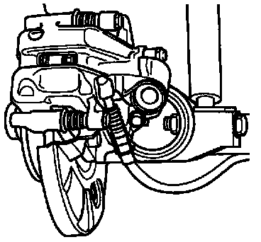

Rear Brakes
Rear disc brake pads, removing and installing
Removal
CAUTION: If the brake pads are to be reused, mark their installed positions before removal. Re-install in their original positions to avoid uneven braking.
- Remove wheels.

- Disconnect parking brake cable from brake caliper.

- Remove brake caliper and brake pads.
CAUTION: Do not allow the caliper to hang by the brake hose. The unsupported weight can stretch and damage the hose.
Do not disconnect the brake hose from the caliper when removing brake pads.
- Bonding surface for brake pads must be free of adhesive and grease residues.
Installing
WARNING: Brake fluid is poisonous and must never be extracted by mouth through a hose.
CAUTION: Extract part of the brake fluid from the brake fluid reservoir before pushing back the pistons.
Use the bleeder bottle or a plastic bottle, which is used only for brake fluid, for extracting the fluid.
If this is not done, particularly if the brake fluid has been topped off, brake fluid may flow out and cause damage.
After installing pads, refill reservoir only to the MAX mark

- Screw in piston by turning knurled wheel of reset and screw out tool 3272 clockwise.
- Insert retaining spring, if equipped, into brake caliper.
- Install brake pads.
- Pull protective foil off outer brake pad backing plate.
NOTE: Mount tool 3272 so that the tool collar (left arrow) is seated against caliper.
If the piston is difficult to move, use a 13 mm open-end wrench on tool flats (arrow -A-).
CAUTION: If the piston is pushed back with a piston resetting tool or by operating the brake pedal, the automatic adjustment mechanism in the brake caliper will be destroyed

- Install brake caliper with new self-locking bolts.
- Connect parking brake cable to brake caliper.
- Depress brake pedal firmly several times, with vehicle stationary, to seat brake pads in their normal operating position.
- Check brake fluid level in reservoir and add fluid as necessary.

- The illustration shows a brake caliper for a vehicle from 10.92 (the assembly sequence is the same)